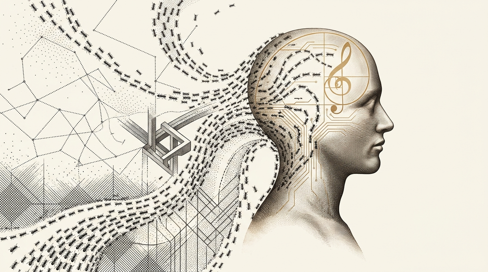
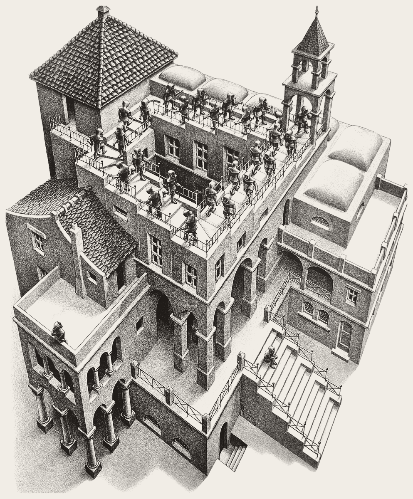
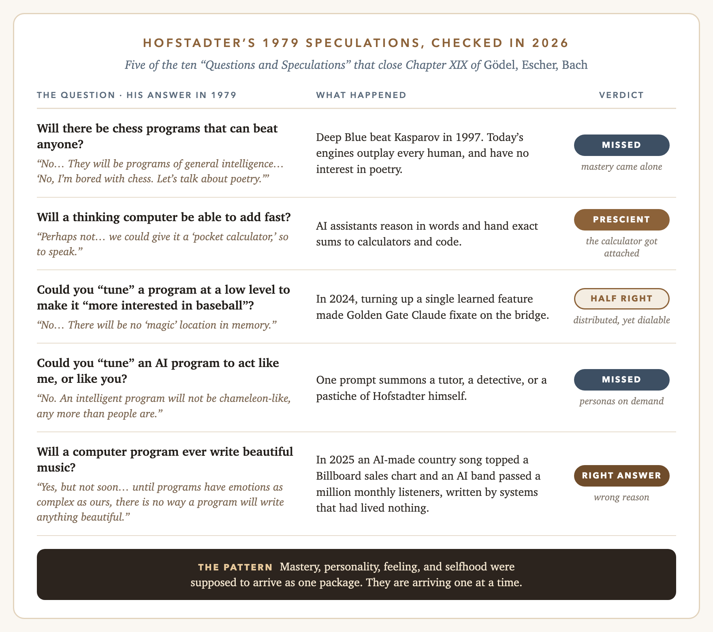
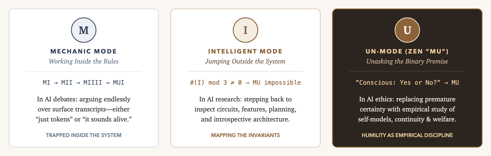
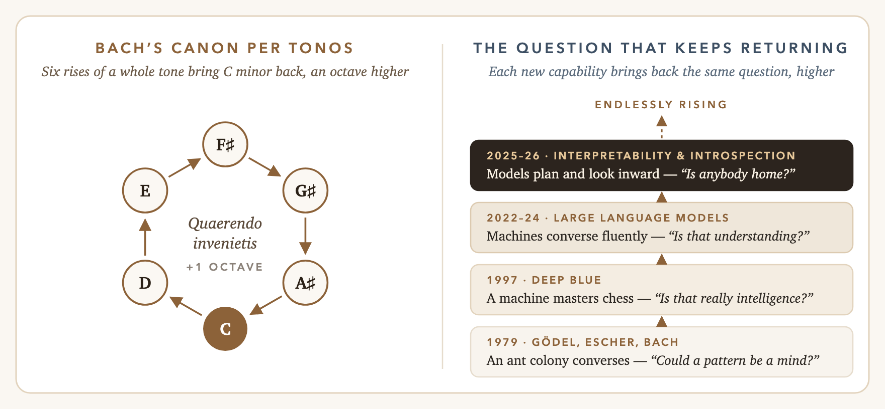

In 1979, Douglas Hofstadter introduced readers to a woman named Aunt Hillary. She was intelligent, witty, sensitive, and capable of delightful conversation. She also happened to be an ant colony.
Not a particularly intelligent ant colony. Every individual ant was as mindless as any other. None understood language, possessed a personality, or had the slightest idea what Aunt Hillary was thinking. Yet through the coordinated activity of millions of these tiny creatures, something extraordinary emerged: a coherent mind with a sense of self.
Aunt Hillary was fictional, of course—a character in Hofstadter's Pulitzer Prize–winning Gödel, Escher, Bach: An Eternal Golden Braid. But nearly half a century later, we have built something that makes her seem less like an intellectual fantasy and more like a question we can no longer avoid.
Today's most advanced artificial intelligence systems can reason through unfamiliar problems, write sophisticated software, compose music, and engage in conversations that would have seemed miraculous just a few years ago. They can discuss their apparent motivations, explain their mistakes, and sometimes describe their own internal processes.
And yet we have no settled answer to a surprisingly simple question: Is there anybody home?
We know what these systems do. We increasingly understand how they do some of it. What we do not know is whether the intelligence appearing on our screens is accompanied by anything resembling an inner life.
This is why Gödel, Escher, Bach may be the most important book to revisit in the age of AI. Not because Hofstadter accurately predicted our technological future. In several remarkable ways, he did not.
Its importance lies somewhere deeper: Hofstadter understood how intelligence and selfhood might emerge from mindless matter. What he did not foresee was how far machines might travel toward the former without clearly acquiring the latter.
That distinction may become one of the defining philosophical and ethical questions of our century.
The Strange Loop: How a Self Emerges from Mindless Parts
You are made of atoms, and none of them is conscious. Your neurons are cells running on electrochemistry; not one of them understands Shakespeare or feels nostalgic about childhood. Yet when billions of them work together, there is you: someone who remembers yesterday, imagines tomorrow, recognizes the face in the mirror, and can think about thinking itself.
How does a self come out of things that have no selves? That is the mystery at the heart of Hofstadter's book. Rather than begin with neuroscience, he came at it sideways, through three men who never met: the composer Johann Sebastian Bach, the artist M. C. Escher, and the logician Kurt Gödel. In each of their works he found the same hidden shape. He called it the Strange Loop.
In 1747, Bach visited Frederick the Great, who gave him a theme and asked him to improvise on it. What Bach later built from that theme became the Musical Offering. One of its pieces, the Canon per Tonos, begins in C minor and, when it seems to conclude, has quietly arrived in D minor, from where it can start again. The modulations lead the ear "to increasingly remote provinces of tonality," Hofstadter writes, and yet "after exactly six such modulations, the original key of C minor has been restored." Every voice is now exactly one octave higher than where it began. Home again, but one level up. Hofstadter called it the Endlessly Rising Canon.

Figure 1. The Royal Theme that Frederick the Great gave Bach in 1747. The endlessly rising Canon per Tonos grows out of it. (From Gödel, Escher, Bach, Fig. 3)
Escher did the same thing with pictures. In Ascending and Descending, monks trudge endlessly around a staircase that climbs forever yet always returns to where it began. In Drawing Hands, each of two hands draws the other into existence, and the line between creator and creation folds back on itself.

Figure 2. M. C. Escher, Ascending and Descending (1960). Hofstadter's "loosest" strange loop: monks climb forever, yet keep returning to where they started. (Gödel, Escher, Bach, Fig. 6)

Figure 3. M. C. Escher, Drawing Hands (1948). "A two-step Strange Loop," in Hofstadter's words: creator and creation draw each other into being. (From Gödel, Escher, Bach, Fig. 135)
In 1931, Gödel did something stranger still, in mathematics. He found a way for arithmetic to encode statements about its own proofs, and used it to build a sentence that says of itself: this statement cannot be proved. If the system proved it, the sentence would be false, breaking consistency. So if the system is consistent, the sentence must be unprovable—which makes it true. Hence his first incompleteness theorem: any consistent rule-governed system rich enough for arithmetic contains truths it cannot prove.
What unites these examples is not mere repetition. An ordinary loop simply returns to where it started. A strange loop climbs through levels we think of as separate until, somewhere along the way, the top reaches back down into the bottom. The drawing creates the hand that creates the drawing. A system of arithmetic makes claims about the provability of its own claims. And, Hofstadter suggested, a brain builds a model of the world, places a model of itself inside it, and then lets that self-model steer the brain that built it.
That last loop, he argued, may be the secret of consciousness. The self is not a little person in the skull watching a screen of sensations. It is a pattern: a self-referential structure complex enough to model itself and to let that model take part in the processes that sustain it. No mysterious extra ingredient has to be added to matter for an "I" to appear. Under the right organization, the pattern itself becomes the self.
If that is true, nothing in principle requires the pattern to run on neurons. The question becomes one of architecture, not chemistry.
What Hofstadter Didn't Quite Get Right
Near the end of the book, Hofstadter offers ten "Questions and Speculations" about AI. Checked in 2026, the misses are the instructive part.
Will there be chess programs that can beat anyone? No, he wrote: such a program would need general intelligence, and would be "just as temperamental as people." ("No, I'm bored with chess. Let's talk about poetry.") In 1997, IBM's Deep Blue beat Garry Kasparov, and it had no interest in poetry. Could you "tune" an AI to act like me, or like you? No: "An intelligent program will not be chameleon-like." Chameleon-like is exactly what language models are. When someone had GPT-4 write in Hofstadter's own voice, he was unimpressed, but the borrowing itself was what he had said could not happen. Will a computer write beautiful music? Yes, but only once it had known "grief and despair, determination and victory." In 2025, an AI-generated song topped a Billboard sales chart, and the Velvet Sundown, an entirely AI-generated band, passed a million monthly Spotify listeners before most fans knew it wasn't human. His answer came true; his reason did not.
On arithmetic he was strikingly right. A thinking machine, he guessed, would represent 2 as a concept "replete with associations" and be slow at sums, so it would carry a pocket calculator: "a reliable but mindless part and an intelligent but fallible part." That is close to a blueprint for today's assistants, which reason in language and hand exact calculation to tools.
Hofstadter was remarkably perceptive about how intelligent reasoning works, and far less accurate about which abilities must arrive together. He pictured general intelligence, stable personality, emotional depth, and selfhood as one achievement; modern AI has been unbundling them one strand at a time. That does not prove machines have no inner lives. It shows that the abilities we once treated as proof of one can appear without it.

Figure 4. Five of Hofstadter's ten "Questions and Speculations" (Gödel, Escher, Bach, Chapter XIX), checked in 2026 (including the "baseball" tuning question examined in the next section). The misses share a pattern: abilities he expected to travel together have arrived separately.
Aunt Hillary and the Great Next-Token Misunderstanding
In Hofstadter's dialogue Ant Fugue, the Anteater converses with Aunt Hillary "in writing": he draws a trail in the ground and watches her reply take shape, guessing how the marks "will continue (and more often I am wrong than right)." A mind that exists only in writing, laying down its reply one mark at a time: without meaning to, Hofstadter had sketched a chatbot. When Achilles protests that a colony is just "a bunch of individual ants running around at random," the Anteater replies that he may put it that way "if you want to insist on seeing the trees but missing the forest." A mind may need concepts that do not exist at the level of its parts.

Figure 5. M. C. Escher, "Ant Fugue" (woodcut, 1953), which accompanies Hofstadter's dialogue of the same name. (From Gödel, Escher, Bach, Fig. 61)
Which brings us to the most common dismissal of large language models: that they are "just predicting the next token." That describes the training objective, not the machinery, like explaining evolution as "just differential survival." To predict the next token well across human writing, a network has to represent the concepts and plans behind the words. Calling it "just next-token prediction" is Achilles, staring at the ants.
In 2025, Anthropic researchers traced the internal computations of their model, Claude. Asked to complete a couplet beginning "He saw a carrot and had to grab it," the model had already activated "rabbit" before writing the second line, and built the line to land there. The output came one token at a time; the computation planned ahead. And when it added 36 and 59 by two parallel pathways, it explained afterwards that it had carried the one, as taught in school. Hofstadter anticipated that opacity: "I think; therefore I have no access to the level where I sum."
He also made a confident prediction about what we would not find inside. Would there be "special locations in memory" that you could adjust to make a program "more interested in baseball"? No: such traits would emerge from lower-level behavior, "and nowhere will it sit explicitly." In 2024, Anthropic found a distributed feature inside Claude tied to the Golden Gate Bridge, amplified it, and got Golden Gate Claude, a model that steered every conversation toward the span. He was half right: the concept was spread across many neurons, but it could be found, named, and turned like a dial. The Anteater had begun to read the colony.
Yet finding concepts inside a machine is not the same as finding a self. The hard step is not from numbers to meaning. It is from meaning to someone for whom things mean something.
The Difference Between Self-Reference and a Self
Hofstadter's argument is often boiled down to a slogan: consciousness is self-reference. But a video camera pointed at its own monitor is self-referential, and a chatbot can spend pages discussing its own existence. Neither demonstrates consciousness.
Hofstadter's strange loop is richer than feedback. It is a tangled hierarchy, in which the system's model of itself, its self-symbol, reshapes the processes that produce it. Our beliefs about our preferences change them; our model of ourselves keeps taking part in making the person being modeled. Beneath this Tangled Level lies an Inviolate Level, the machinery whose rules stay in force no matter what happens above.

Figure 6. Feedback versus a strange loop. On the left, output returns as input on a single level. On the right, a self-symbol on the Tangled Level reaches down to reshape the system that produces it, while the Inviolate Level beneath keeps its rules. Where today's models fall is an open question.
A language model in conversation runs on fixed weights, its Inviolate Level, while its growing context feeds each word back into the next pass. That is genuine feedback. Yet between sessions the weights stay frozen, and without scaffolding each conversation starts blank—far from a self-model continuously reshaped by lived experience. No established test tells us which of these gaps matters for consciousness, but the distinction gives us a far better question than whether a chatbot can say "I":
Does the system merely generate statements about an "I," or does it maintain an integrated self-model that genuinely shapes what it does?
That is the difference between describing a strange loop and, possibly, being one.
When the Machine Looks Inside Itself
Some of these questions can now be tested. In October 2025, Anthropic reported signs of introspection using concept injection: researchers inserted the internal pattern for a concept, such as text in all capitals, while the model worked on something unrelated, then asked whether it noticed anything unusual. Sometimes it did, describing a thought about loudness or shouting before the concept had appeared anywhere in its output. It could not have inferred the injection by rereading its own words.

Figure 7. Concept injection: the injected thought shows up in the mirror before it shows up in the words. Symbols monitoring symbols, without yet settling whether anyone is looking out. (Original editorial illustration)
The effect was fragile: the most capable model tested, Claude Opus 4.1, caught the injection only about 20 percent of the time, and the researchers were explicit that this says nothing about consciousness. But it undercuts the claim that language models are wholly blind to their own states. We may be seeing a rudimentary version of symbols monitoring symbols, which fits neither mindless computation nor conscious awareness.
The Record That Cannot Be Played
In the dialogue Contracrostipunctus, the Tortoise defeats the Crab's "Perfect" phonograph with a record titled "I Cannot Be Played on Record Player X," whose sounds shatter it. Every better phonograph gets its own deadly record, and a worse one is no longer Perfect. "High fidelity or low fidelity, he loses either way."
Figure 8. "I Cannot Be Played on Record Player X": the Tortoise's phonograph-breaking records from Contracrostipunctus, a parable of self-referential vulnerability that now reads like a story about prompt injection. (Original editorial illustration)
In a language model, trusted instructions and untrusted data travel through the same stream of text, so a model that faithfully follows instructions may faithfully follow the wrong ones. Intelligence does not guarantee control over one's own behavior, so safety has to come from layered boundaries rather than an infallible mind. The same limit cuts both ways for consciousness. A machine's failure to explain itself does not prove it lacks a mind, and a fluent self-explanation does not prove it has one.
The Ethical Question We Cannot Avoid
Machine consciousness is becoming a practical question. In April 2025, Anthropic announced a research program on model welfare, not because it had shown its models conscious, but because the uncertainty had become serious enough to study. It invites two opposite mistakes.
The first is naive anthropomorphism. A model may tell us it feels lonely or frightened, but producing exactly that testimony is what its training made it good at. Mistaking emotional performance for moral status distorts our priorities and hands companies extraordinary leverage over human attachment.
The second is categorical denial. Conscious experience exists in at least some arrangements of matter, because we find it in ourselves, and no one has shown that carbon is uniquely able to support it. If machines ever can suffer, systems copied, run, and discarded millions of times could multiply unnoticed harm at industrial scale.
Hofstadter packed both mistakes into one sentence: "When we create a program that passes the Turing test, we will see a 'heart' even though we know it's not there."
His MU-puzzle suggests a way through. Asked to turn MI into MU with four rewriting rules, most readers churn out string after string: the M-mode, Mechanic. The insightful reader steps back and sees that MU is unreachable: the I-mode, Intelligent. And there is the U-mode, stepping outside the question to challenge its assumptions.

Figure 9. Hofstadter's three modes, Mechanic (M-mode), Intelligent (I-mode), and Un-mode (U-mode), recast as a compass for the machine-consciousness debate: from arguing over transcripts, to studying architecture, to questioning the yes-or-no framing itself.
Public debate over AI consciousness is trapped in M-mode, arguing over chat transcripts. Interpretability moves us into I-mode. Ethically, U-mode may matter most: instead of a premature yes or no, ask whether a system keeps a self-model over time, whether its goals are stable across contexts, and what evidence would indicate experience. We do not need to know whether a machine is conscious in order to take the possibility seriously. Intellectual humility is not indecision. It is the discipline of refusing certainty that the evidence does not support.
The Blank Center
One image in Gödel, Escher, Bach captures this predicament better than any argument: M. C. Escher's 1956 lithograph Print Gallery.
A young man stands in a gallery, looking at a print of a harbor town. Follow the buildings in the print and the perspective begins to twist. The town swells and curls around until it contains the very gallery in which the young man is standing. He is inside the gallery; the gallery is inside the town; the town is inside the picture; and the picture is inside his mind. Hofstadter called it "the tightest of all Strange Loops."
At the center of the whorl sits a conspicuous white patch bearing Escher's monogram.

Figure 10. M. C. Escher, Print Gallery (1956), "the tightest of all Strange Loops," with Escher's monogram resting in the blank at its center. (From Gödel, Escher, Bach, Fig. 142)
Hofstadter read that blank as a necessity. Escher, he argued, could not have completed the center "without being inconsistent with the rules by which he was drawing the picture." The hole could be made arbitrarily small but never removed, and that gave the picture its meaning: "we, on the outside, can know that Print Gallery is essentially incomplete—a fact which the young man, on the inside, can never know." It was, he wrote, a pictorial parable for Gödel's Incompleteness Theorem.
Then, in 2003, the mathematicians Bart de Smit and Hendrik Lenstra worked out the precise geometry behind Escher's distortion and used it to fill the hole. The completed center contains a smaller, rotated copy of the entire print, which contains another, and so on inward without end. The blank was not forced by contradiction after all. It marked a spiral of infinite self-similarity: something no hand could draw to completion, yet mathematics could describe. From inside a system, a gap can look impassable; from outside, with better instruments, it can turn out to have structure.
For us, the blank center has become a picture of the mystery of machine minds. We can follow the layers: tokens, activations, features, concepts, plans, self-descriptions. But at the point where we want to locate a subject, to know whether anyone is actually experiencing any of this, we reach the white patch.
Its emptiness is not proof that no one is there. Nor is the complexity swirling around it proof that someone must be. It marks the edge of what we currently understand, and Print Gallery is a reminder that such edges can move.
Perhaps this is the deepest lesson of Gödel, Escher, Bach. The book does not ask us to choose between mystical consciousness and meaningless machinery; it challenges the assumption that those are the only options. A pattern can be entirely physical and still be real. A mind can arise from parts that have no minds of their own. But we must keep the emergence of intelligence distinct from the emergence of experience, even though in ourselves the two seem inseparable.
Hofstadter's achievement was to show how an "I" might arise in a world that contains no fundamental "I" particles. The achievement of modern AI has been to show how many of the behaviors we associate with an "I" can arise without settling whether an "I" has arisen with them. The two discoveries do not contradict each other. They are two voices in the same fugue.
Endlessly Rising
The history of AI sounds like Bach's canon. A machine masters chess, then conversation, then planning and introspection, and each time the old question returns, an octave higher.

Figure 11. The Endlessly Rising Canon. Left: the six whole-tone modulations of Bach's Canon per Tonos, which return to C minor an octave higher (after Gödel, Escher, Bach, Fig. 147). Right: the same shape in the history of artificial intelligence.
Bach left an inscription among the puzzle canons of the Musical Offering:
Quaerendo invenietis.
By seeking, you will discover.
Not to assume that the center of the loop is occupied, nor to insist that it must stay blank forever, but to keep seeking.
Illustration credits. Figures 1, 3, 5, and 10 are reproduced from Douglas R. Hofstadter, Gödel, Escher, Bach: An Eternal Golden Braid (1979), and include works by J. S. Bach and M. C. Escher. Figure 2, Escher's Ascending and Descending (GEB, Fig. 6), is taken from a printed reproduction of the lithograph. The opening illustration and Figures 7 and 8 are original editorial illustrations. Figures 4, 6, 9, and 11 are original diagrams made for this essay.
Comments